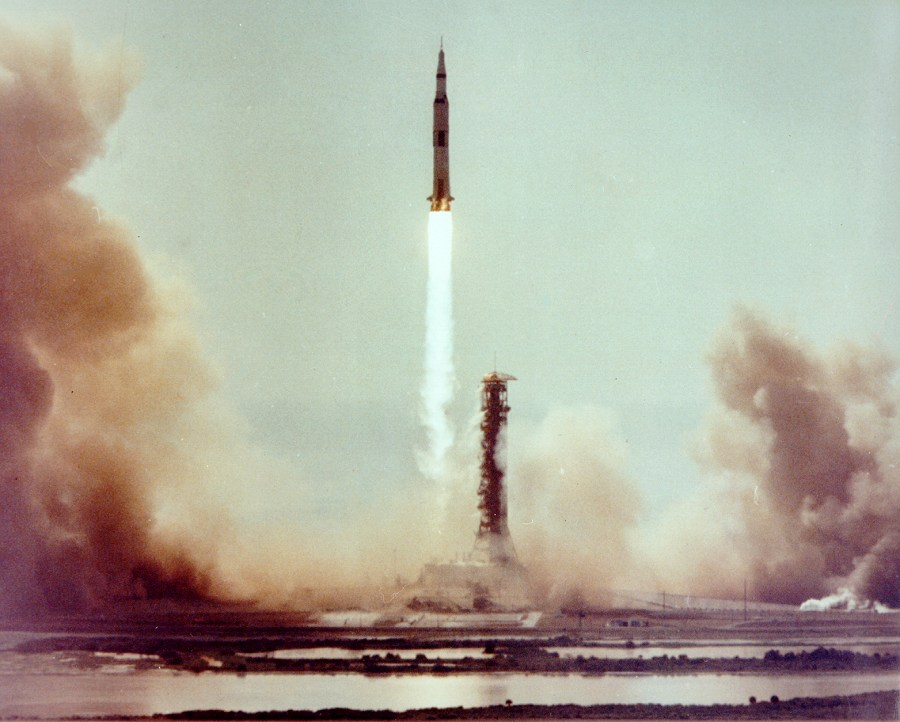

Apollo on the Moon
Between July 1969 and December 1972, six Apollo crews landed on the Moon. These notes cover the missions and the machines that carried the astronauts.


Apollo 11
Apollo 11 launched on 16 July 1969. Four days later the lunar module Eagle landed in the Sea of Tranquility with Neil Armstrong and Buzz Aldrin on board. Michael Collins stayed in lunar orbit in the command module Columbia.
Armstrong and Aldrin spent about two and a half hours outside. They collected rock and soil samples and set up experiments. The crew returned to Earth on 24 July 1969.
The six landings
-
Apollo 11
July 1969, Sea of Tranquility
Neil Armstrong, Buzz Aldrin
-
Apollo 12
November 1969, Ocean of Storms
Pete Conrad, Alan Bean
-
Apollo 14
February 1971, Fra Mauro
Alan Shepard, Edgar Mitchell
-
Apollo 15
July 1971, Hadley–Apennine
David Scott, James Irwin
-
Apollo 16
April 1972, Descartes Highlands
John Young, Charles Duke
-
Apollo 17
December 1972, Taurus–Littrow
Eugene Cernan, Harrison Schmitt
Spacecraft
Saturn V
A three-stage rocket about 110 metres tall. It launched every Apollo crew that flew to the Moon.
Command Module
The capsule where the crew lived on the way to the Moon and back. It was the only part that returned to Earth.
Lunar Module
It carried two astronauts down to the surface and later took them back up to the command module.
Lunar Roving Vehicle
A battery-powered car used on Apollo 15, 16 and 17 to travel farther from the lunar module.
Spacesuit
A pressurised suit with a backpack that supplied oxygen and cooling water during each moonwalk.
Mission Control
Flight controllers in Houston, Texas, followed every mission and spoke to the crew by radio.